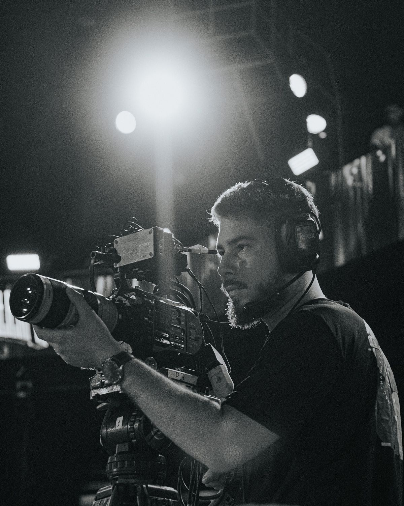

12 pessoas já se candidataram
Produtor(a) de Eventos
- Produção
- Evento
- Regional
- Presencial
Descrição da oportunidade
Procuramos uma pessoa organizada, criativa e comunicativa para integrar a equipe de produção do Festival Sonora 2025. A pessoa selecionada dará apoio na logística do evento, contato com artistas, organização de agenda e acompanhamento de bastidores.
Requisitos principais
Experiência com eventos culturais, boa comunicação.
- R$ 1.200
- Valor fixo
- 15/06/2025
- Data do evento
- São Paulo
- Local presencial
